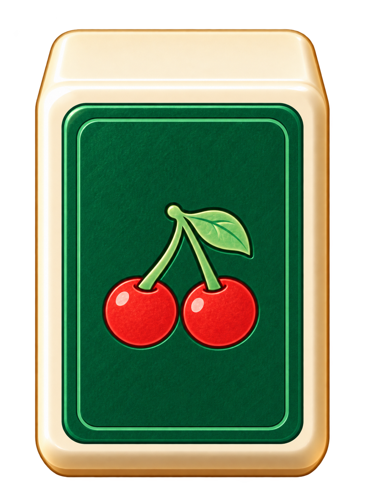
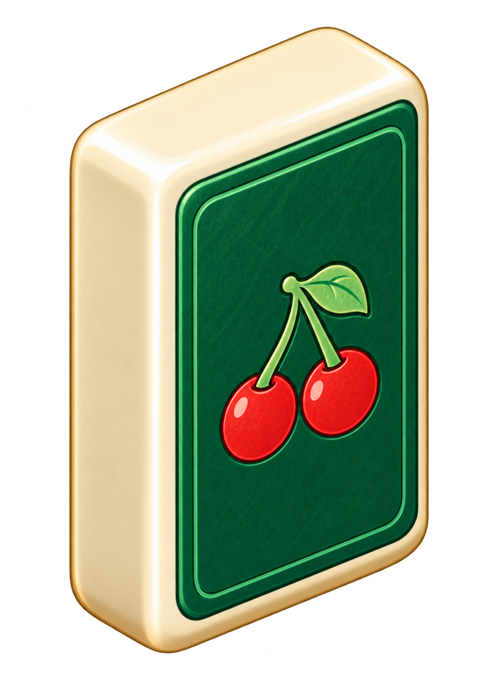
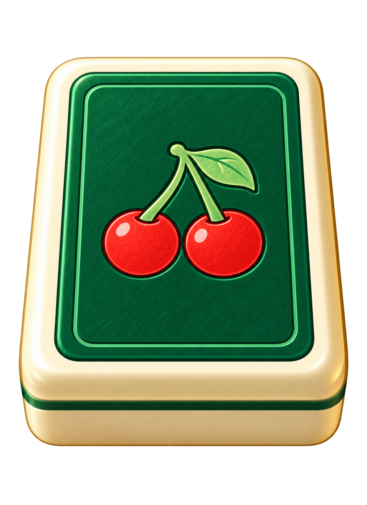
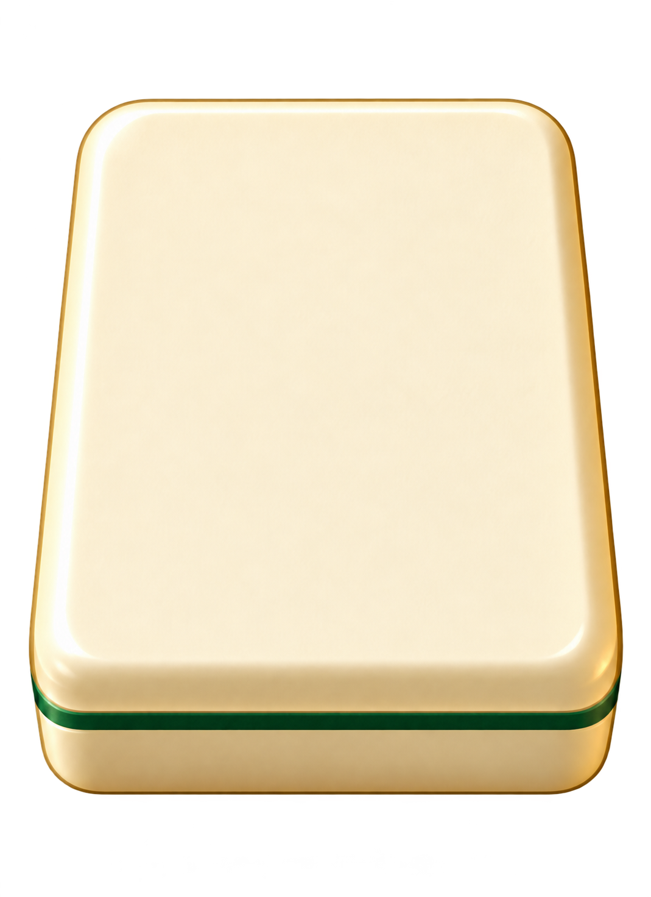

立體牌代表樣本
沿用原本的象牙色牌身與深綠雙櫻桃。立起暗牌、躺著的牌牆及明牌分別製作；牌面圖案仍使用已確認的原 PNG。




原版與桌上躺牌比較
實際小尺寸
本輪是四張代表候選，PNG 原檔未裁切或改寫。桌上圖案以相機透視投影到平坦表面，保留原筆鋒與色彩。側向另一邊目前使用鏡像樣本，光源仍需精修；這是靜態分件試作，完整座位角度、動作及正式美術驗收仍在後續。
沿用原本的象牙色牌身與深綠雙櫻桃。立起暗牌、躺著的牌牆及明牌分別製作；牌面圖案仍使用已確認的原 PNG。




本輪是四張代表候選，PNG 原檔未裁切或改寫。桌上圖案以相機透視投影到平坦表面，保留原筆鋒與色彩。側向另一邊目前使用鏡像樣本，光源仍需精修；這是靜態分件試作，完整座位角度、動作及正式美術驗收仍在後續。